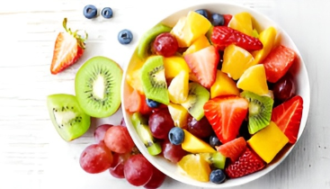
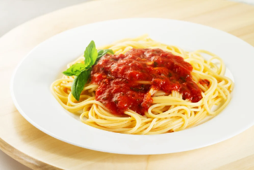
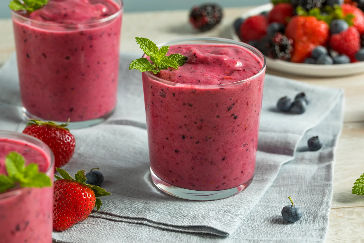

Omelete de Queijo e Ervas
Omelete fresco com queijo derretido e ervas aromáticas - Uma explosão de sabor matinal!
Ingredientes
- 2 ovos;
- Alecrim;
- Pimenta-do-reino;
- Orégano.
Modo de Preparo
- Quebre 2 ovos em uma tigela e bata-os.
- Adicione uma pitada de sal e pimenta a gosto.
- Aqueça uma frigideira em fogo médio e despeje os ovos batidos.
- Adicione queijo ralado e ervas frescas a gosto.
- Cozinhe por alguns minutos até que os ovos estejam firmes. Dobre ao meio e sirva.
Salada de Frutas
Salada refrescante de frutas da estação - Uma mistura colorida e saudável para satisfazer o seu paladar!

Ingredientes
- Morango, uva, maçã, banana e kiwi;
- Suco de laranja ou limão;
- Mel ou açúcar mascavo.
Modo de Preparo
- Corte as frutas ainda frescas em pedaços pequenos.
- Misture as frutas em uma tigela grande.
- Adicione um pouco de suco de limão ou laranja para realçar o sabor.
- Opcionalmente, adicione um pouco de mel ou açúcar mascavo para adoçar.
- Refrigere por alguns minutos e sirva gelado.
Sanduíche de Frango Grelhado
Sanduíche saboroso de frango grelhado - Uma combinação perfeita de proteína suculenta e vegetais frescos, servida em fatias de pão macio!
Ingredientes
- 200g de peito de frango;
- Pimenta-do-reino;
- Manjericão;
- Alface;
- Tomate;
- Maionese/mostarda.(OPCIONAL!)
Modo de Preparo
- Tempere peitos de frango com sal, pimenta e ervas a gosto.
- Grelhe os peitos de frango em uma frigideira ou grelha até que estejam cozidos por completo.
- Corte o frango em fatias finas.
- Monte o sanduíche com pão de sua escolha, alface, tomate, e outros acompanhamentos desejados.
- Sirva com molhos como maionese ou mostarda, se desejar.
Macarrão com Molho de Tomate
Clássico macarrão com molho de tomate - Uma refeição reconfortante e cheia de sabor, perfeita para qualquer ocasião!

Ingredientes
- Macarrão espaguete
- Cebola e alho
- Azeite
- Pimenta calabresa
- Orégano
- Molho de tomate
- Queijo parmesão
Modo de Preparo
- Cozinhe o macarrão de acordo com as instruções da embalagem.
- Em uma panela, refogue cebola e alho picados em um pouco de azeite.
- Adicione molho de tomate enlatado à panela e aqueça.
- Tempere com sal, pimenta, e ervas secas a gosto.
- Escorra o macarrão cozido e misture-o com o molho de tomate.
- Sirva com queijo parmesão ralado por cima.
Smoothie de Frutas
Smoothie refrescante de frutas tropicais - Uma bebida cremosa e nutritiva, repleta de vitaminas e energia para começar bem o dia!

Ingredientes
- Banana, morango e manga;
- Iogurte natural ou leite.
Modo de Preparo
- Em um liquidificador, combine as frutas congeladas com um pouco de iogurte natural ou leite.
- Adicione um pouco de mel ou xarope de bordo para adoçar, se desejar.
- Misture até obter uma consistência suave e cremosa.
- Sirva em copos e decore com fatias de frutas frescas, se desejar.
Obrigado por escolher nosso site como sua fonte de inspiração culinária! Continuaremos trabalhando duro para trazer receitas de qualidade e sabores autênticos para você.